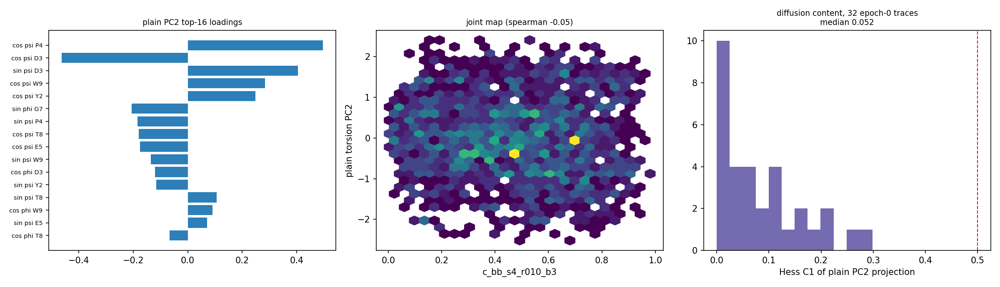

1. Representative CV distributions — 28 panels; titles carry median / IQR / normalized entropy. Top-left block: contact CVs incl. legacy (collapsed, top-left) vs new winners.
figures/genpept_r7_cv_histograms.png
2. Clustered |Pearson r| redundancy map — representative CVs; bright blocks = redundant groups (resbal vs atom-pairs; Rg vs contacts).
figures/genpept_r7_cv_corr.png
3. CV1 × CV2 scatters — contact CV1 vs residual torsion PC1 (color Rg); contact vs plain torsion PC1 (color d(Y2–W9)); Rg vs hairpin closure ratio (color contact CV1).
figures/genpept_r7_cv_2dmaps.png
4. Residual-PC1 loadings + spectrum — the axis is the PETGT turn / strand ψ flip (cos ψ P4, W9, D3…); flat EVR spectrum (PC1 ≈ 9.7%).
figures/cv2_loadings.png
5. Diffusion content (Hess C₁) — bank plain/residual PC1 projections sit at C₁ ≈ 0.07 (red line = 0.5 diffusion criterion); trace-own PC1 median 0.39. Bank axes are diversity coordinates, not slow-motion coordinates.
figures/cv2_diffusion_content.png
6. CV1 × CV2 16×8 joint maps — log₁₀ counts; titles give occupancy (94–100%) and per-CV1-bin CV2 IQR. Grid placement for the window campaign is well-founded.
figures/cv2_joint_maps.png
v2 figures (new CV winners: backbone-heavy / CA-only, r₀=10 Å)
Same layouts as the previous PC tests, regenerated for the census-winning definitions. Scripts: scripts/genpept_r7v2_figures.py, scripts/genpept_r7v2_morph.py.
7. β-scan pseudo-FES — heavy r₀12 vs backbone-heavy r₀10 vs CA-only r₀10; spread-vs-β panels.
figures/r7v2_contact_beta_pseudofes.png
8. Combo map: backbone-heavy β=3 — sep × midpoint grid over the Rg/E2E pseudo-FES base.
16. Diffusion maps on the bank — spectra and ψ1×ψ2 colored by contact CV1 / residual torsion PC1 (two metrics: torsion space, CA-dRMSD).
figures/cv_diffmap_spectra_maps.png
17. TwoNN intrinsic dimension — d ≈ 3.6 (torsion) / 4.6 (CA-dRMSD): the bank manifold is ~4-dimensional, a single 2-D CV pair cannot hold it.
figures/cv_twonn_id.png
18. Circular Fourier harmonics (R1..R4) + Fisher-Lee circular correlation matrix — interior ψ torsions are bimodal (low R1, high R2); strongest couplings are intra-residue φ-ψ.
figures/cv_fourier_harmonics_corrmatrix.png
19. Winding along ordered coordinates — no significant hidden periodic pumps above the permutation null.
figures/cv_fourier_winding.png
20. The physical turn axis — Ramachandran per residue colored by residual CV2; ψ(flank residues) flips β-extended (+140°) → curl (−10°) across the axis, matched at constant CV1.
figures/cv2_turn_axis.png
21. Top alternative orthogonal CV1×CV2 pairs — scored on |r|, joint occupancy, conditional CV2 spread; negative controls sink to zero.
figures/cv_orthogonal_pairs_top.png
22. CV1 candidates on solvated MD — pooled coverage vs bank, per-replica decorrelation times.
figures/cv_dynamics_cv1_validation.png
23. Steering force |∂CV/∂x| across each CV's own range — legacy def shows a genuine gradient dead-zone.
figures/cv_steerability.png
24. MI table, 6-state curl ladder, full-bank GBn2 components vs CV2
figures/cv_mi_states_energy.png

25. Designated CV2 scalar: plain torsion PC2 — loadings, joint map vs CV1, diffusion C₁ on epoch-0 traces.